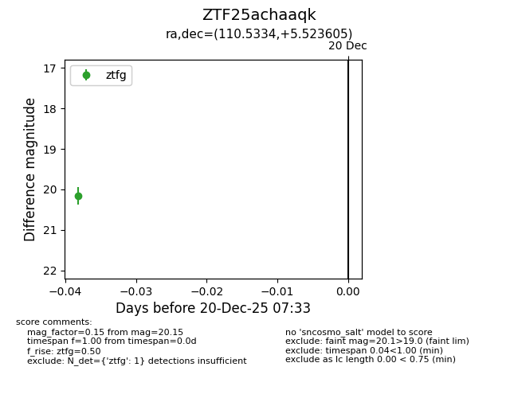
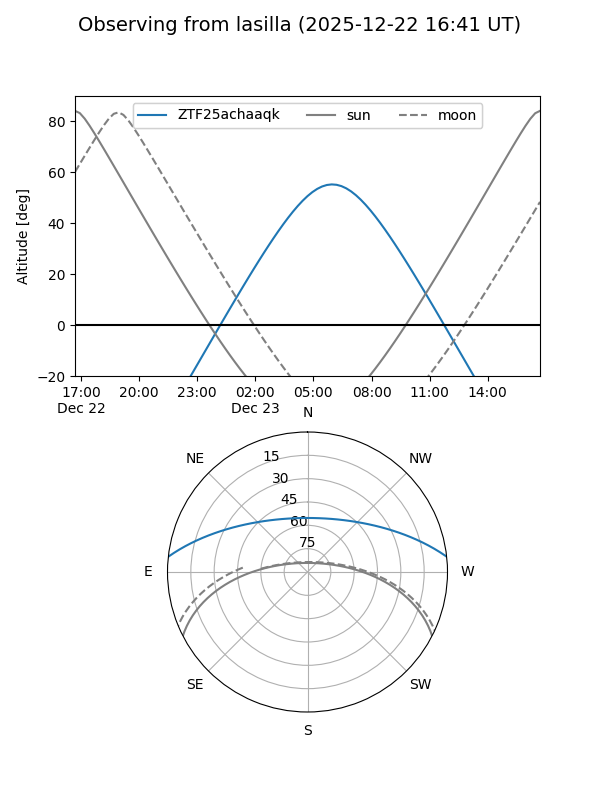
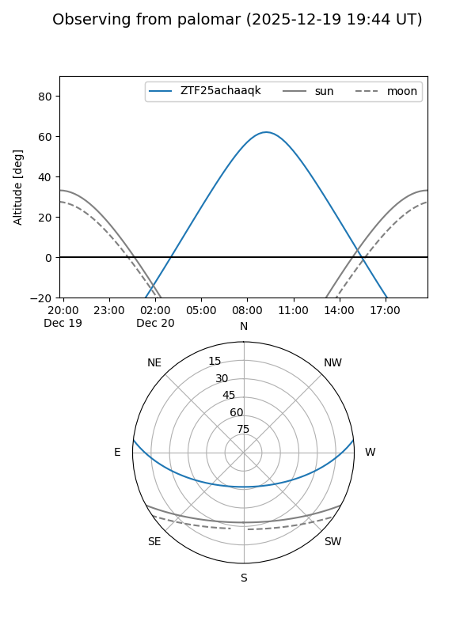

ZTF25achaaqk
Target ZTF25achaaqk at 2025-12-20 07:34
Aliases and brokers:
FINK: fink-portal.org/ZTF25achaaqk
Lasair: lasair-ztf.lsst.ac.uk/objects/ZTF25achaaqk
ALeRCE: alerce.online/object/ZTF25achaaqk
alt names
ZTF25achaaqk (ztf,fink_ztf)
Coordinates:
equatorial (ra, dec) = 110.5334,+5.52360
equatorial (HMS+DMS) = 07:22:08.02,+05:31:24.98
galactic (l, b) = (211.4767,+9.33369)
Flags:
Photometry:
last ztfg=20.15
1 ztfg detections
Lightcurve

Visibility


Additional plots